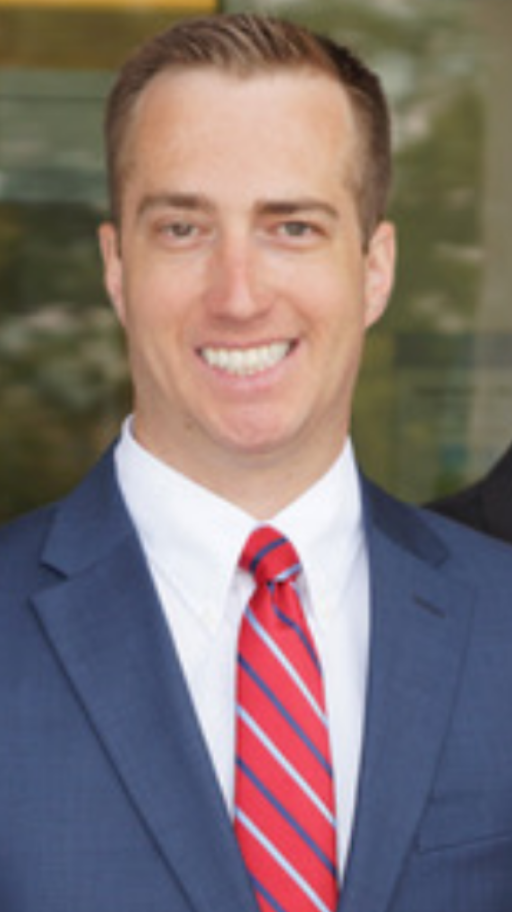

Kevin
I was born on 24 February 1988 in Oakland, California at the Alameda Naval Hospital. My father is Robert Douglas Bell, and my mother is Ruth Ann Butler Tarbet. My parents divorced when I was a toddler. My mom and I then moved near Salt Lake City, Utah. I mainly attended Municipal Elementary School as a child.
On 2 March 1996, at the age of eight, I was baptized a member of The Church of Jesus Christ of Latter-Day Saints in Roy, Utah at the local chapel. That is one of the best decisions I have made in my life. I attended Roy Junior High School beginning in the seventh grade until ninth grade. My mom re-married while I was in junior high school. We moved to Kaysville, Utah after I graduated from junior high. I attended Davis High School until graduation in 2006.
After high school, I went to Utah State University for one year before going on my LDS mission in July 2007. I went to the Georgia, Macon Mission, Spanish speaking. I loved my mission. I'm so grateful that I was able to learn Spanish. And, of course, I now have a special place in my heart for all Hispanic and Spanish speaking people. I try to continue to improve my Spanish speaking abilities every day. In July 2009, I honorably returned home from my mission. Going on a mission was also one of the best decisions I have ever made.
I now work as a Dental Assistant at Layton Hills Dental in Layton, Utah, and live at home with my widowed mother. My step-father, Stephen Tarbet, died in June 2019 of aggressive T-cell lymphoma at the age of 77.
Hobbies
- Cello
- Speaking Spanish
- Giving Service
- Contiuous Learning
| Relative Name | Relation | Living |
|---|---|---|
| Ruth Ann Butler Tarbet | Mother | Yes |
| Stephen Tarbet | Step-Father | No |
| Marilyn Butler | Aunt | Yes |